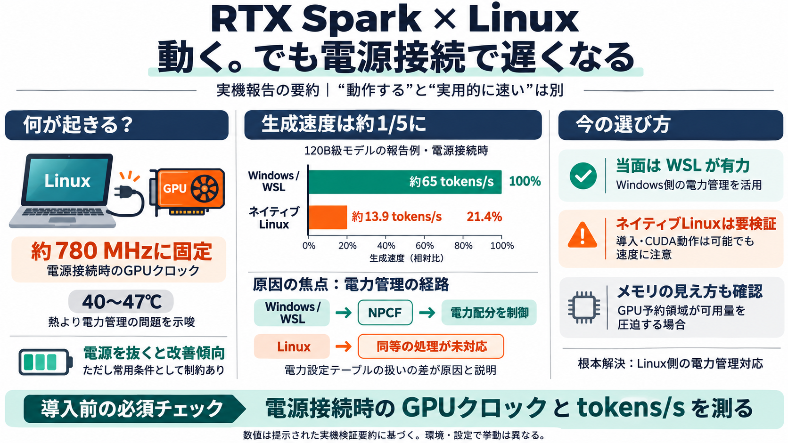

Linux on the Nvidia RTX Spark Laptop: What Actually Works | MindStudio
Yes, but it comes with a serious catch. Linux installs and runs on RTX Spark laptops like the MSI Prestige N16 Flip AI P…

RTX Spark × Linux：動く？ 速い？
RTX Spark搭載ラップトップでLinuxは動かせるが、電源接続時にGPU性能が大幅に落ちる—という実機検証ベースの整理です。
読む前の3つの前提
OS（ネイティブ/WSL/デュアルブート）は、GPUの電力管理やドライバ経路を変え得ます。
“動作”と“実用”のズレ
結論として、RTX SparkでLinuxはインストールできるが、電源接続時にGPUクロックが抑制され、推論が激減する落とし穴があります。
“Linuxで可能な範囲”
記事の記述では、NVIDIAのオープンカーネルドライバによるGPUアクセラレーション、映像出力、CUDA動作が成立したとされています。
数字が示す差：1/5
GPT-OSS-120Bのような120B級で、Windowsは約65 tokens/s前後、WSLもほぼ同等に対し、ネイティブLinuxは約13.9 tokens/sまで低下したと報告されています。
温度ではなく“電力”
電源アダプタ接続時にGPUクロックが約780MHzへ抑制され、温度は40〜47℃程度で推移したため、熱制限ではなく電力管理の扱いが示唆されています。
中心はNPCF（Windows依存）
原因の中心は、Windows側の「NVIDIA Platform Controllers and Framework（NPCF）」のような電力管理コンポーネントがCPU-GPU間の電力配分を制御している点だと説明されています。
電源を抜くと改善する
記事では、電源を抜いた（バッテリー駆動）ときにLinuxのトークン性能が改善する傾向が示され、電源接続時だけが極端に不利だと整理されています。
当面の意思決定
現時点の実務的な代替として、WSLが“実用上の最適解”になりやすい、という主張です。
もう一つの壁：ユニファイドメモリ
ラップトップはGPU向けにデフォルトで大きな領域（例：96GB相当）を予約し、Linuxから十分なメモリが見えない場合があるとされています。
根本修正の方向性
根本解決は、NVIDIAがNPCF相当の電力管理ロジックをLinuxドライバへ移植することに依存するとされています。
この話の持ち帰り
RTX SparkでLinuxは“動く”が、電源接続時にGPUクロックが約780MHzへ固定されるため推論性能が約1/5へ落ちる—この前提で設計判断すべきです。
Yes, but it comes with a serious catch. Linux installs and runs on RTX Spark laptops like the MSI Prestige N16 Flip AI P…
[8:16] again and see what happens. Now, 67 tokens per second. Power mode set to balanced both times. Now, here's the [8:…
Small, ultra-efficient RTX Spark desktops are built for agents, creative workloads, gaming and everyday productivity. Ma…
© 2026 NVIDIA Corporation. All rights reserved. NVIDIA, the NVIDIA logo, and other NVIDIA product and service names are …
RTX Spark is a new beginning for Windows PCs. One PC built for creators, gamers and AI agents. With a powerful 1 Petaflo…